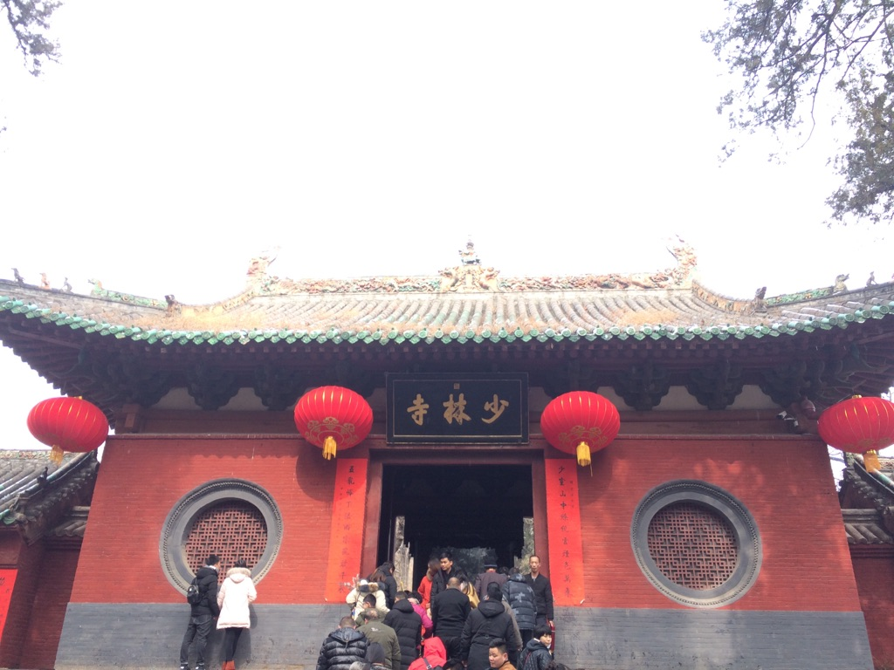

嵩山之行
戊戌狗年正月初六，2018年2月21日，中岳嵩山一日游。
岳父，岳母，小惠，姐姐，我们一行五人，早晨九点出发，驱车两个小时至嵩山少室山下。山门下游人熙攘，映入眼前的山门横书“天下第一名刹”。
向前走约莫一公里，也就到了寺前。寺门前摩肩接踵，红灯笼高挂。不禁感概，也许千百年前的僧人怎么也不会想到，如今竟有如此多的慕名前来者。也或许，曾经的太平盛世，也曾出现过如此人山人海的盛况也未可知。

我对诸佛并无太多兴致，倒是对寺中碑文想要拜读拜读。无奈游客太多，又加上同行匆匆，只能寄托他日再见，定当细细感受千年禅寺的博大精深。
逛完少林寺，继续往山林深处走，接下来就是塔林。千年塔林，我等后辈贸然打扰，望各已归西天的圣僧恕罪。
雪后转晴的嵩山好像还未醒来，从山脚下往上看，群山还笼罩在一片朦胧中。乘坐缆车，随着渐渐升高，嵩山也揭开了它的面纱。
山上冬日的树叶呈现着一种枯黄的红色，像红色经冬日的寒风冲刷褪色一般。林间上又隐隐约约的像洒了一层白沙，那是还未融化殆尽的薄雪。
缆车停在山顶，依在一块巨石山顶。山顶上铺上了一层薄雪，像是一位年事已高白了头的高僧。对面的山顶，以山脊为界线，一面有雪，一面无雪，甚是奇妙。远处连绵的山脉，一道道山脊也划出一道道分界线。
沿着山路前行，不远处即是“嵩山栈道”。栈道依悬崖峭壁而建，通向山内的三皇寨，然后再通向另一条下山路。走在栈道上，眼前是一座座有“嵩山石笋”组成的山峰，看一层一层的石笋，突然来了食欲不禁想咬上一口。
虽然天已经晴了，但是山上的积雪还未融化，所以栈道的阶梯异常的滑，导致我们上山的速度慢了一半。一面小心翼翼的爬，一面望着远处的三皇寨和连天吊桥如此的远，不时让人萌生退意。
在山中看山不觉得山的雄伟，当看到远处山腰上栈道的行人时，才会深深的感叹人类的渺小及山的巍峨。
由于天色将晚，最终我们只到了连天吊桥。冬日雪晴的嵩山，为登山增添了不少别致，还真是不虚此行。